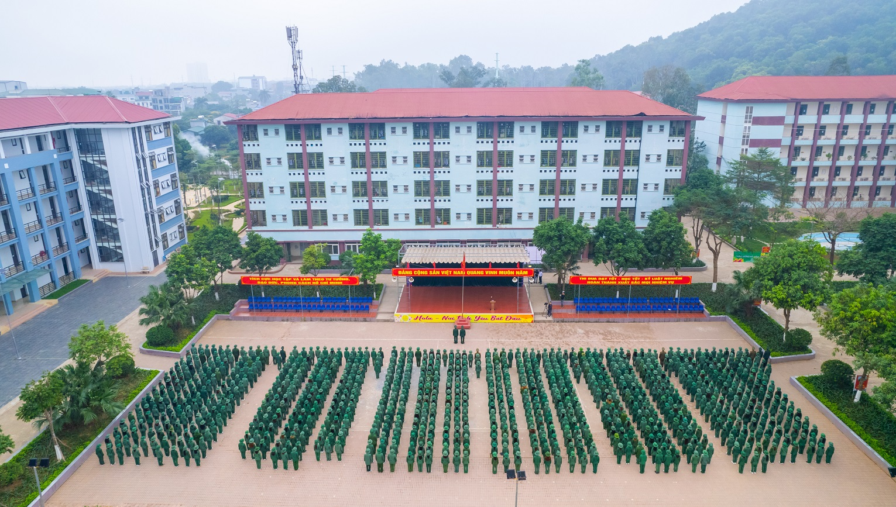
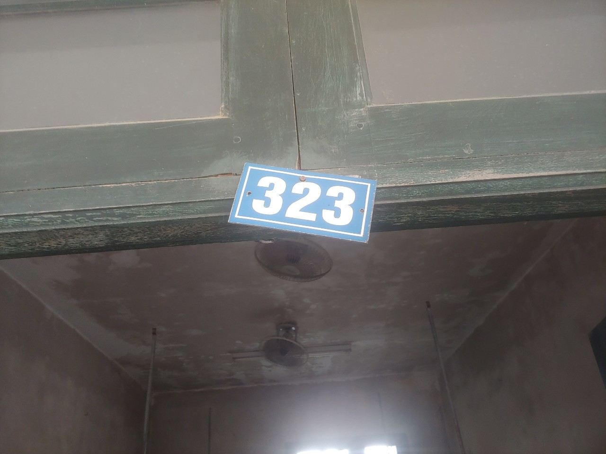
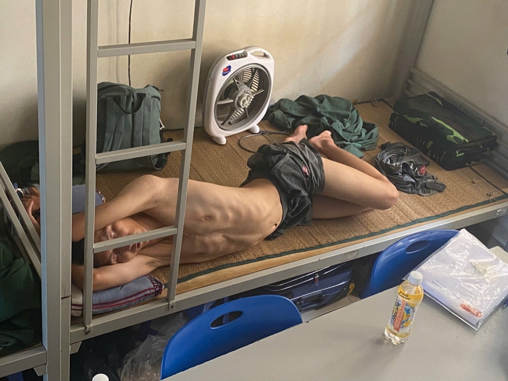
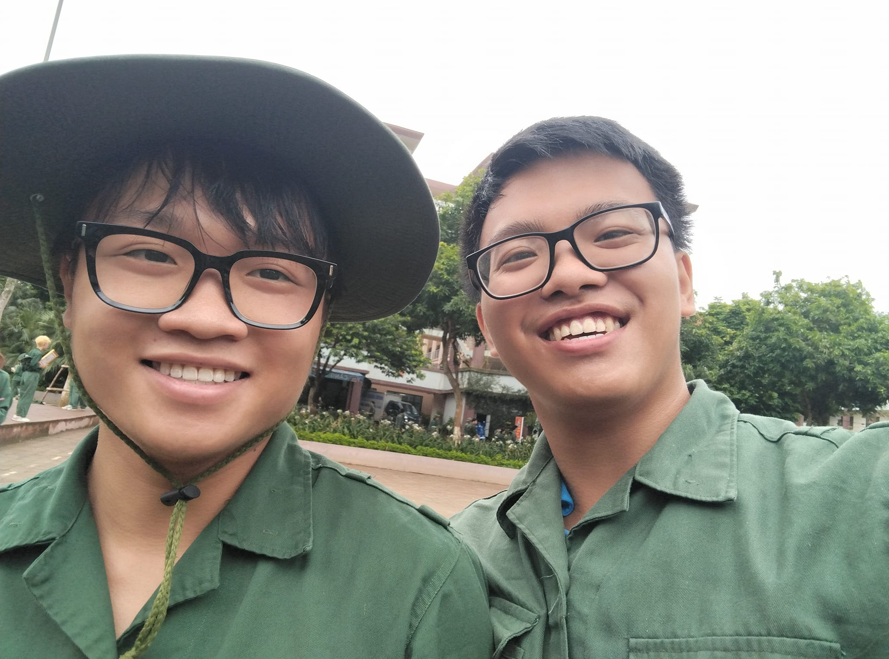
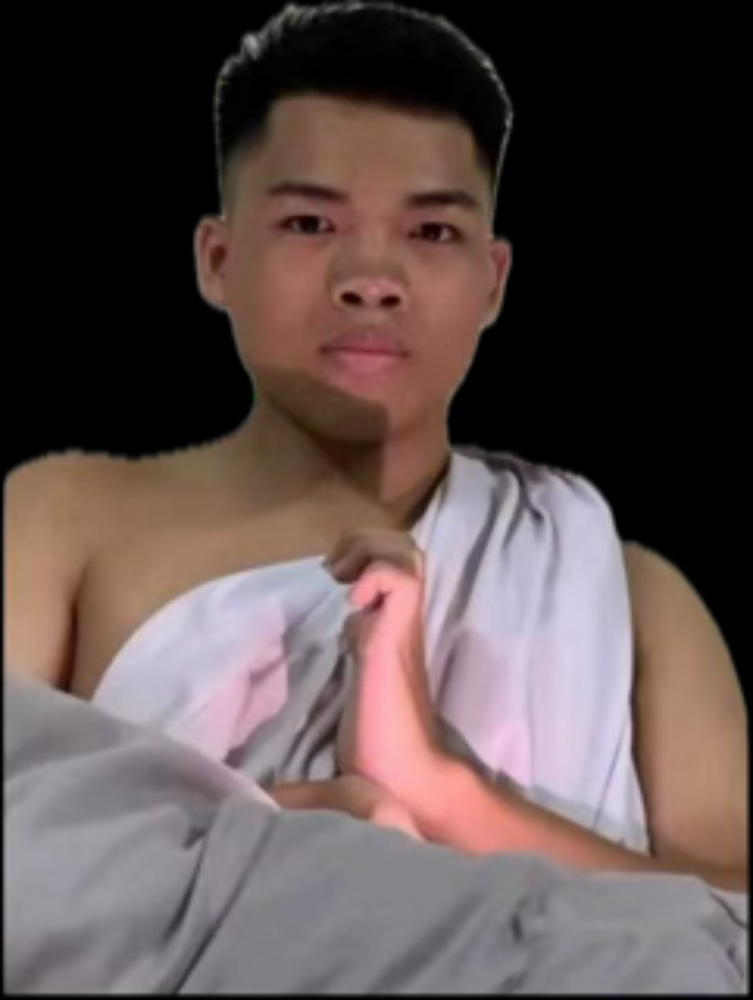
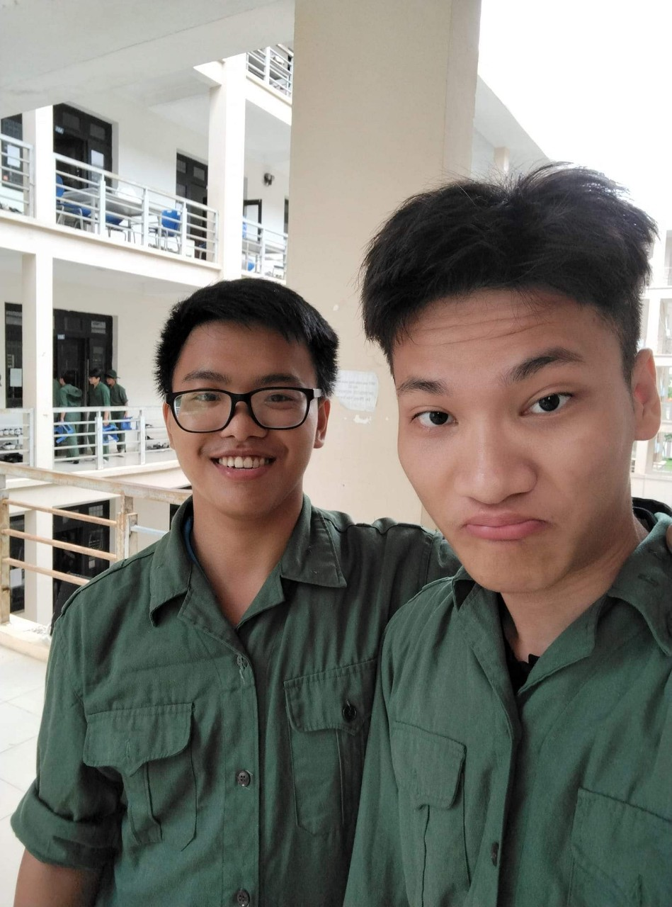
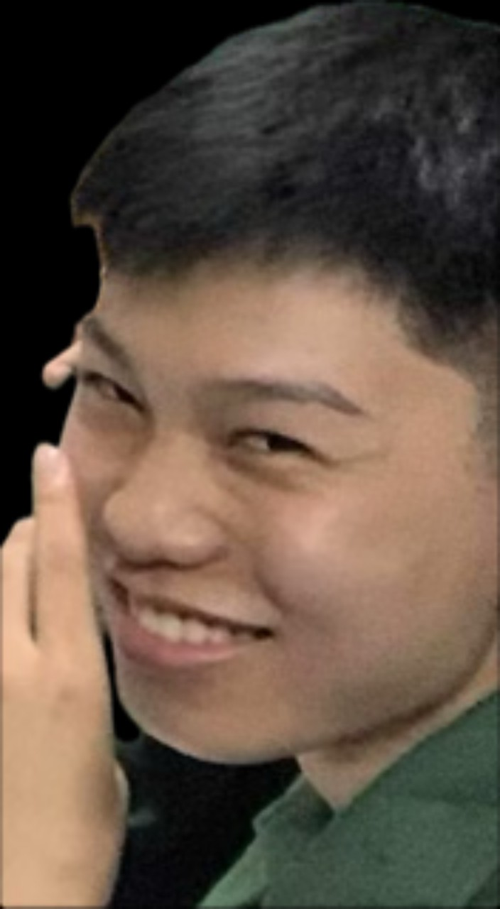
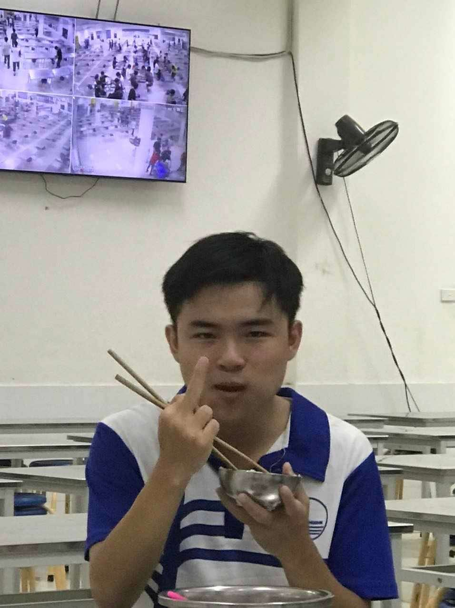

How did Dun enjoys his national-defense training course
Overview about VNU National-Defense Training Course
VNU National-Defense Training Center is located in Hoa Lac, a rural area of Hanoi, and he had to travel to that fuckin place to complete his course. He woke up at 4 AM to prepare and get ready to leave his hostel. However, something went wrong with his phone at that time: he had forgotten to charge it! With only 4% battery remaining, he didn't have enough time to recharge it. He arrived at the university at 5 AM and followed the school bus to the center.

His mind was in chaos as he worried about living in a new place for over a month and how he would make friends in a small room shared with 13 people, so he remained silent on the bus. He was also anxious about the results of his upcoming course.
At the center, students were taught politics and basic military skills. They also had to complete daily tasks. Students had to wake up at 5:30 AM to do morning exercises, followed by a quick breakfast before cleaning their rooms and heading to class at 7 AM. Lunch was served at either 10 AM or 11 AM, followed by a nap from 11:30 AM to 1:30 PM, before returning to class at 2 PM. Dinner began at 5 PM or 6 PM, and from 7 PM to 8:30 PM, there was study time. They would gather in teams for a roll call at 8:45 PM, and the day would end when they went to bed at 9:30 PM.
His roommates
Ok now is his room. His room was a small, cramped space numbered 323, with a poorly hung number board above the front door and beds squeezed in for 14 people (wtf). As he entered that room, he was shocked because he thought that there were ceiling fans in the room, but in reality it was just 2 mini fans hanging on ceiling.

He quickly claimed a comfortable bed for himself, ignoring the others who were competing for a spot to sleep. Lying in bed, he worried about how he would make friends, but fortunately, he was in room 323, where everyone turned out to be cheerful and friendly.
"To be honest, I feel lucky when living with those friends during the course. I'm so lowkey as you said but they changed me from a timid boy to a more active person" Dun said to me. He also want to introduce 13 friends who lived with him during that course...
Bùi Xuân Chung

He was one of the most active people in Dung's room, quickly becoming the platoon commander within the first few days. However, due to some trivial reason, he was relieved of his position. Initially, he was furious with the company commander's decision, but his mood lifted, and he was happy again within a day. He has a strong passion for football and also possesses impressive talent in chess.
Lê Khả Dũng

His first impression of him was his extremely quiet personality. He spent all his spare time sleeping and rarely interacted with others. After three weeks, he revealed that he had achieved a Black rank in Vovinam seven years ago, which surprised everyone. At that moment, Dung couldn’t help but wonder what would happen if someone in the room ever turned against Kha Dung. He also enjoys playing Free Fire — a popular game in his country.
Vũ Thành Công

To this day, Dun still feels that he owes Cong an apology for mistakenly thinking he was gay when they first met. Cong graduated from Le Hong Phong High School for gifted students, a renowned school in their country. Like Dun, he enjoys playing Arena of Valor, but he's a fan of SGP, a rival team to FPT. He also plays Rise of Kingdoms and occasionally even earns money from the game.
Bùi Quang Chiến

Dun discovered that Chien's brain is divided to 2 parts : one for Data Structure and Algorithm and the other for his porn videos on X (Twitter). He is very talented in Chess and Xiangqi. About game, Dung knew that Chien likes League Of Legends.
Đào Ngọc Cường

Dun and Cuong both come from the same hometown - Thanh Hoa. Dung heard that he ended his first year with high GPA and he respected Cuong very much. He loves Fifai Online - a popular football game in the world. There's a small problem that Dung has wondered about: sometimes Cuong sticks his hand in his pants and scratches his balls.
Nguyễn Trần Phúc Châu
Both Dun and Châu are pretty into anime, though the anime Châu watches tends to be a bit darker. He's also quite good at translation - he's even worked on translating a few hentai light novels and manga from English to Vietnamese.
Lê Huy Anh Dũng

This guy shares the same name as Dun but is more commonly known as Teri. Just like Dun and Châu, he's also into anime. However, Teri seems to be quite lazy when it comes to physical activity - which has, well, led to some rather peculiar smells. Dun once even joked that the smell might be caused by a mix of laziness and, well... a bit too much alone time masturbating.
Trần Đức Cường

Updating...